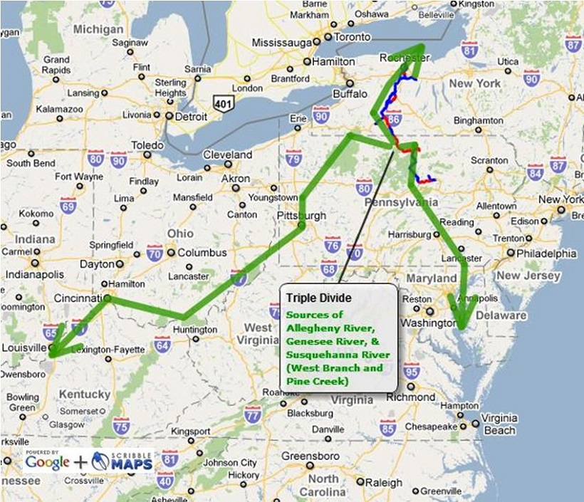
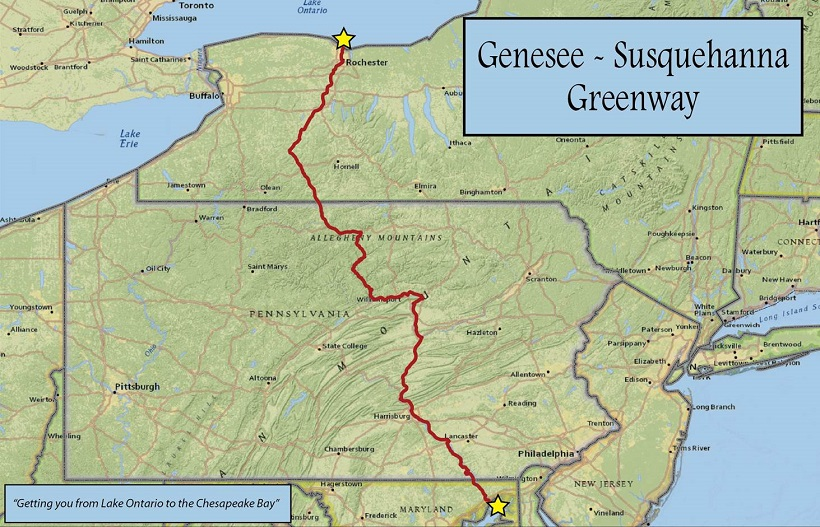

Genesee River Wilds Plan
Maps
Genesee River Watershed with Genesee River Wilds

Genesee River Watershed with Genesee River Wilds Target Area and Riverside Multi-Use Trails.
Source of Genesee River at Triple Continental Divide in PA

Triple Continental Divide in Potter County, PA, source of Genesee River, Allegheny River, and Pine Creek/West Branch of Susquehanna River. Three watersheds of national significance are fed from this headwaters source: Lake Ontario and the Saint Lawrence River; the Mississippi River and Gulf of Mexico; and the Chesapeake Bay.
Genesee River Watershed with Counties and Multi-Use Trails

Genesee River Watershed with Counties and Riverside Multi-Use Trails. Genesee River watershed boundaries with riverside multi-use trails in Triple Divide Trail System (Rochester, NY, to Williamsport, PA), recently incorporated into route of 400-mile long Genesee-Susquehanna Greenway (Lake Ontario in Rochester, NY, to Chesapeake Bay in Havre de Grace, MD). The trail system strategically functions as a toehold for creating a wider corridor of forested riparian (streamside) buffers that will provide additional protections for the Genesee River and other water resources along the corridor.
Genesee-Susquehanna Greenway

Genesee-Susquehanna Greenway: Over 400 Miles of Tourism-Generating Riverside Nature Parks and Minimally-Invasive Outdoor Recreational Infrastructure Connected by a Bicycling and Multi-Use Trail inside Forested Riparian Buffers for Improving Water Quality, Wildlife Habitat, Quality of Life, Health, Education, Active Transportation, and Economic Revitalization. Concept developed by 37 representatives of federal (including National Park Service), state (PA DCNR, PennDOT, NYSOPRHP), regional (three regional planning councils in PA [SEDA-COG, NCPRPDC, NTRPDC] and the Rochester-area MPO [Genesee Transportation Council] in NY), county, municipal, and non-profit organizations from PA (32), NY (4), and MD (1) in meeting in Williamsport, PA, Nov. 13, 2014, organized by Headwaters PA (PA), Genesee River Wilds (NY), Susquehanna Greenway Partnership (PA), and Lycoming County Planning Commission (PA). Map 11/2014 courtesy Lycoming County, PA, Planning Commission. The multi-use trail system strategically functions as a toehold for creating a wider corridor of forested riparian (streamside) buffers that will provide additional protections for the Genesee River and other water resources along the corridor. Collaboration on a system of this scale will provide leverage and funding resources for work on its component sections, including the use of riverside trails to expand forested buffers along the Genesee River.